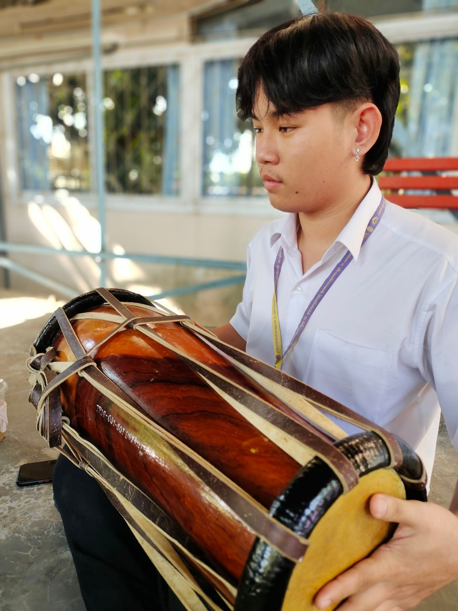
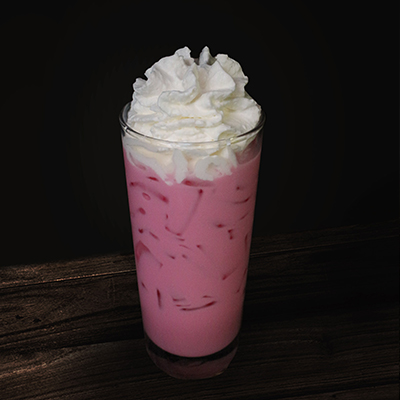
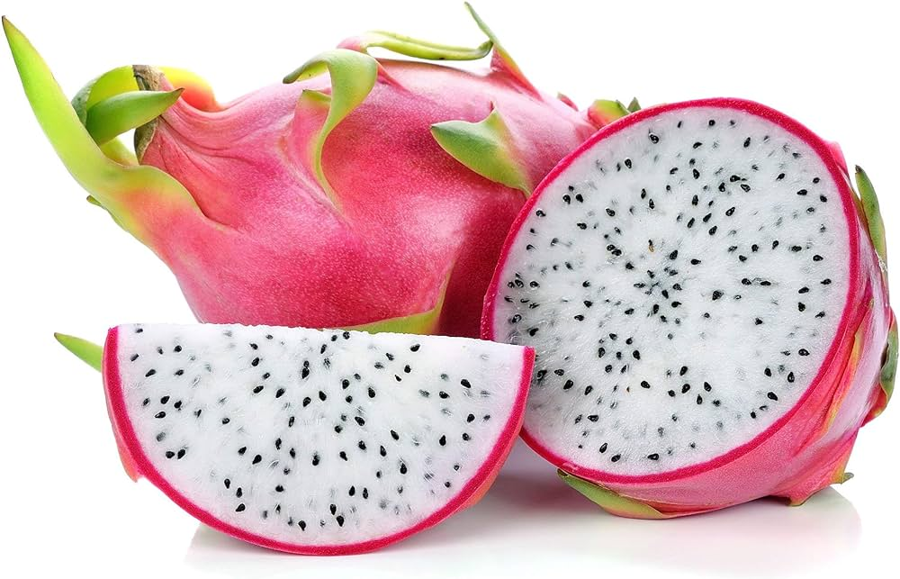

Thai dance
Thai dance
Thai dance
| Arts of Thailand |
| Contact Us | Pictures | Information |
| Dance Forms |
||
|
Thai dance |
Thai dance |
Thai dance |
|
||||||
Thai Music |
||
 Thai Drum |
Xylophone |
Thai Flute |
|
Thai Dessert |
||
Ja Mongkut |
Mango Sticky Rice |
Boy Loy Kai Wan |
Thai Food |
||
|
Papaya salad |
 Spicy prawn soup |
Pad Thai |
Thai Dress |
||
|
Thai Chakri costume |
Thai Dusit set |
Thai Rajpataen costume |
|
Thai Culture |
||
 Thai paper lantern |
 Songkran |
Loy Kratong Festival |
Thai Tourist attractions |
||
 Wat Phra Kaew |
Bang Saen Beach |
Ko Samui |
Thai Drinks |
||
|
Thai tea |
Watermelon smoothie |
 Pink milk |
|
Thai Fruit |
||
|
Mangosteen |
Durian |
 Dragon fruit |
|
Animals |
||
|
Black-bellied Pitta |
Pink dragon millipede |
Burnt tail fish |